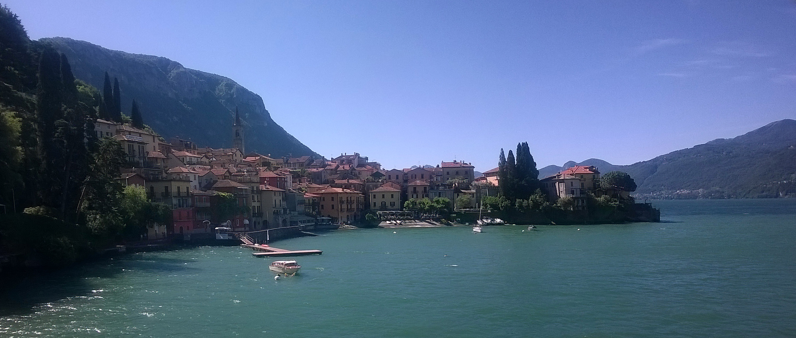

01 / Music
Protect the music budget.
Free conservatory music is the Venice default. No verified staged opera within €60 for two was found on these dates. An affordable vocal Baroque recital is a conditional alternative.
A thoughtful route through old churches, mountain landscapes and regional kitchens—with room for opera, a long conversation, and the view.
Explore your itinerary
Free conservatory music is the Venice default. No verified staged opera within €60 for two was found on these dates. An affordable vocal Baroque recital is a conditional alternative.
Choose archaeology-inclusive admission. Sant’Ambrogio is a separate, free basilica visit.
Confirm Muottas coverage for 21 October and the chosen times. Without it, daytime lifts cost CHF 85 for two.
Punta della Dogana gives a waterfront pause. San Giorgio’s tower is closed for maintenance; no tower panorama is promised.
La Vineria has more than one associated farm address. Venice “near the main station” could mean Mestre or Santa Lucia; the address must decide.
24 October’s default mapped total is 10.1 km. Shorter walking options cost extra transport but may make the day better.
Choose a city, day and route. Your selection changes the trip’s mapped walking total, not your bookings.
Keep Swiss meals near CHF 70 to leave currency margin. ECB reference on 16 October: €1 = CHF 0.9272; €80 ≈ CHF 74.18, before card or exchange variation. ECB rates ↗
| Day | Keep it simple | One proper meal · price for two |
|---|---|---|
| 18 · Frankfurt | Bakery / snacks | Wagner €49.40; arrival permitting |
| 19 · Milan | Bakery breakfast; Spontini €14–22 lunch | Risoelatte ~€69 dinner at 19:00 |
| 20 · Bernina / St. Moritz | Packed train breakfast and light snacks | Hauser CHF 58.50 dinner |
| 21 · Engadin | Simple breakfast; CHF 18–25 supper supplies | La Stalla CHF 62.50 lunch |
| 22 · Varenna | Bakery / packed travel lunch | Victoria Grill €69.50 dinner |
| 23 · Verona | Simple breakfast and packed train lunch | Farm dinner €63 at 19:00 |
| 24 · Verona / Venice | Bakery / packed lunch or late light supper | Do Spade ~€59 lunch if arrival permits, or checked dinner after music |
| 25 · Venice | Farini breakfast €7.60; light bakery meal €18 | Il Bacio €72 lunch or dinner |
| 26 · Homeward | Bakery breakfast; flight snack | Lunch before departure, Do Spade ~€59 if logistics fit; takeaway fallback €25 |
Breakfast inclusion is unknown. Cheap-meal allowances are estimates unless a published basket is shown. Confirm covers, service, drinks and the final total before ordering. Transport, admissions and extra drinks sit outside these meal models.
No verified staged opera at or below €60 for two was found on your dates. Vocal Baroque offers an affordable singing alternative if its direct venue total is confirmed.
24 Oct · 18:00 · FREE
Sala Concerti, Conservatorio Benedetto Marcello, Palazzo Pisani, San Marco 2810, historic Venice
Two pianos, percussion and spoken voice; adventurous twentieth-century Italian concert, not opera.
Official dated programme says free admission until seats are exhausted; no seat guarantee, reservation or duration confirmed.
Aim to reach the venue around 17:30; suggested arrival, not a published door time. This replaces another music event. Eat the larger meal at lunch, or arrange dinner after the actual finish.
Official programme ↗24 Oct · 18:30 · €10 for two
Auditorium Cesare De Michelis, M9 Museo del '900, Mestre mainland
Mozart quartet fragments and orchestra, Bach Art of Fugue; introductory conversation in Italian. Concert, not opera.
Official conservatory programme publishes €5 admission and tickets at the M9 box office. No seats checked.
Especially convenient if hotel proves to be on mainland. It conflicts with the historic-Venice free concert and requires foregoing part of the first canal afternoon. Choose one.
Official programme ↗25 Oct · 18:00 · €20 for two
Auditorium Cesare De Michelis, M9 Museo del '900, Mestre mainland
Conservatory piano recital, solo and four hands; includes Bach chorales arranged by Kurtág, Casella, Boulez, Ravel and Debussy.
Official programme publishes €10 regular admission; online and M9 box-office sales. Any online fees and seats need checkout; €40 margin remains below ticket cap.
If selected, replace the San Giorgio sunset outing and Cannaregio evening. Leave historic Venice around 16:00–16:15 with a checked mainland connection to reach M9 by about 17:30. Do not assume M9 is beside Mestre station.
Official programme ↗24 Oct · 19:00–20:00 · €60 couple venue rate ONLY if confirmed
Scuola Grande dei Carmini, Dorsoduro 2616–2617, historic Venice
Vocal chamber recital, soprano with basso continuo. Vivaldi, Antonia Bembo and Benedetto Marcello; Liesl Odenweller with Venice Music Project Ensemble. Not staged opera.
Official FAQ lists couple (two together) €60 and direct box-office sales. This supports the advertised venue rate but does not guarantee zero additional fees or available seats on arrival. Online dated Clappit ticket breakdown is €69.86 for two, so exclude online purchase under the €60 cap.
Published venue box office daily 10:00–17:00, and event evening 18:00–18:45, except private-event closures. Ask for the couple rate and total before paying. If total exceeds €60 or no seats, use the free conservatory alternative only if timing still allows; otherwise enjoy a meal and canals.
Official programme ↗ · Published prices ↗25 Oct · Regular Sunday 10:00 · FREE
St. Mark's Basilica; Porta dei Fiori, north side Piazzetta dei Leoncini
Sung solemn Mass: participation in worship, not a tourist concert.
Regular official worship schedule, sung by Cappella Marciana. Services can vary. This is participation in worship, not a free concert or tourist access shortcut.
Official programme ↗18 Oct · 19:00 · Alte Oper, Mozart Saal
Christian Mass and Jewish cantata with tango influences. Lowest band €22 each = €44 for two before fees. Two seats in that band are unconfirmed; €33 and €39 bands exceed your couple cap. Replace the longer walk, aiming at 18:30 arrival.
Official programme ↗Arrival · local food · optional sacred music
The anchorA relaxed arrival and a Frankfurt meal.
Leave luggage at IntercityHotel Frankfurt Hauptbahnhof. Arrival time is unknown: choose a short Römerberg, Kaiserdom and riverbank walk only if you have daylight and energy.
Green sauce, eggs, potatoes and schnitzel with apple wine and water. Shared strudel is optional. If taking the concert, make this a relaxed late lunch or request 17:00 only if arrival permits; avoid rushing across Sachsenhausen.
The €22-per-person band gives €44 for two before fees; availability unconfirmed. Aim for 18:30 arrival. Replace the longer walk with music rather than filling every hour.
Duomo archaeology · Sant’Ambrogio · regional dinner
The anchorConnect Augustine’s baptism and Ambrose’s basilica.
Your flight is stated as 09:10–10:20. Allow 60–90 minutes for exit, transfer and the final walk. A direct Centrale shuttle or M4 → M2 are options. Keep lunch simple at Spontini Duomo: roughly €14–22 for two.
Buy an official ticket explicitly including the archaeological area, where Ambrose baptised Augustine in AD 387. The roof is optional: protect time and money for the church story.
Monday visitor window 14:30–18:00; worship takes priority. The main basilica is free. Explore the atrium and accessible crypt without rushing.
Request the earliest dinner table, Via Manfredo Camperio 6. Ossobuco with risotto, saffron risotto and shared tiramisu cost €57; allow €12 for water and two covers, about €69 for two. Confirm extras.
Milan → Tirano → St. Moritz
The anchorEnjoy the Bernina scenery, then rest.
Supplied trains: 06:20–08:52 Milan–Tirano and 10:06–12:35 Tirano–St. Moritz. Verify exact services and seat reservations. The 74-minute change works only if these times operate as stated. Italian and RhB stations are adjacent but separate.
Watch Brusio, Poschiavo, Alp Grüm and Lago Bianco. Regional trains and Bernina Express use the same scenic line. A panoramic Express needs its seat reservation as well as a ticket.
San Gian is in St. Moritz Bad; use a bus or taxi with luggage. Keep the walk short and combine Hauser in Dorf with your outing: CHF 58.50 for two, or CHF 68 with shared dessert. Cheap train snacks handle the other meal.
Confirm the hotel’s pool/spa entry procedure, areas and opening that day. No second mountain excursion is needed.
Pontresina · Santa Maria · conditional mountain view
The anchorA regional lunch and Santa Maria before any mountain decision.
Ask reception about ice and snow. Use a short dry section; the longer Lej da Staz option is optional and adds substantial distance. Larch colour is possible, never assured.
Capuns, pizzoccheri and a litre of charged tap water/service. Or use the CHF 35 two-pizza basket. Buy cheap supper supplies before the afternoon church visit.
Published weekday access is 15:30–17:30 through 23 October; no photography inside. The free guided visit is 17:00–17:30 on 21 October: choose it instead if local explanation matters more than an early mountain view.
First confirm your San Gian pass covers 21 October AND the intended ascent/descent times. With a clear forecast and confirmed coverage, go up for views and two cafés crème, CHF 11. Check the café’s service and valley return. Otherwise enjoy the valley.
Bernina descent · Varenna · an unhurried table
The anchorThe lovers’ waterfront walk and a lake memory together.
Choose actual SBB/Trenord connections, with a generous buffer for separate tickets. Aim for Varenna by roughly 15:00; no departure is validated.
Follow Passeggiata degli Innamorati, San Giorgio and the old village. Sit by the water for a conversation and a photo together. Villa Monastero is optional if arrival allows: garden €26 for two, garden plus house €30. Interior/garden circulation is extra walking.
Shared bresaola, two perch risottos, shared tiramisu, water and covers. This is the square-facing Grill, not premium Visteria. Confirm October operation and menu. Two pizzas, water and covers at the same venue offer a €31.50 fallback.
Varenna → Verona hills · local wine and conversation
The anchorDaylight at the property, then dinner with the farm’s produce.
Keep breakfast simple and buy a packed lunch for the journey. Your supplied Verona trip is 11:35–15:17; train changes and numbers still need checking.
Confirm the host’s exact entrance and arrange a station–farm taxi. Leave the city sightseeing for tomorrow; farm grounds and transfers are outside the mapped total.
Shared goat cheese, two tagliatelle, shared tiramisu, two Valpolicella glasses, water and covers. Ask the host how the harvest went or which cheese pairs with the wine already on the table. A separate paid tasting or tour is unnecessary.
San Zeno → Venice · free evening music
The anchorSan Zeno’s history, then music at Palazzo Pisani.
The station–San Zeno–Castelvecchio–Arena loop is 5.45 km before visits. Taxi to San Zeno and walk back: 3.54 km, with taxi fare extra. Allow church time, luggage collection and a train buffer. Single-church entry is €8 for two.
Exact hotel address determines Mestre versus Santa Lucia; “near the main station” is insufficient. Gina’s cooked tortelloni start at 12:00, so do not schedule them before a pre-noon train. Buy a packed lunch, or eat the main meal after arrival.
Do Spade models €59 for two including a €10 water/cover allowance. Lunch is easiest before the concert if arrival permits; otherwise check a post-concert dinner against actual finish and kitchen hours. Keep the other meal cheap.
San Marco 2810, historic Venice. Twentieth-century Italian music for two pianos, percussion and spoken voice; free until seats are filled. This is the default music choice. M9 Mozart at 18:30 is an alternative, not an extra event.
St. Mark’s worship · one interior · a free waterside view
The anchorParticipate in sung Mass, then leave space for the city.
Free worship, with Cappella Marciana under the regular schedule. Use Porta dei Fiori on the north side; services can vary. Attend as worship, not as a tourist concert or sightseeing shortcut.
Choose Frari (Sunday 13:00–18:00, last entry 17:30; €16 for two), OR St. Mark’s tourist interior after 14:00 (base published €20 for two). Worship access does not include a tourist visit. Il Bacio models €72 for two including water, spritz and covers.
Enjoy the waterfront without an island boat fare. San Giorgio’s bell tower is closed; an island excursion is optional and costs extra transport. The full on-foot loop is 6.6 km; a shorter boat-out route is available with fare extra.
Replace the late lagoon walk or island sunset. Leave historic Venice around 16:00–16:15 with a checked connection, aiming at M9 around 17:30. Mestre transfers are additional.
Breakfast · lunch before departure · airport
The anchorLeave with time in hand.
Use a bakery or the hotel breakfast if included. Keep sightseeing optional and store luggage only if the departure plan leaves time.
Choose one relaxed meal before leaving: Do Spade €59 model if its location and opening fit the confirmed transfer. Otherwise a simpler €25 Dal Moro’s pasta-and-water takeaway is available only 12:00–18:00; do not detour against the airport deadline.
Your supplied flight is VCE–DUS 17:55–19:30. Airline requirements take precedence. Current ATVO examples include 15:00 from Mestre FS or 14:50 from Piazzale Roma, about 20 minutes advertised travel; allow traffic and waiting margin. Select only after confirming hotel and ticket.
Operator route information supports the routing. Only your confirmed ticket or a date-specific journey result establishes a particular departure and connection.
| Date | Journey | Time / status | Action |
|---|---|---|---|
| Mon 19 Oct | FRA → LIN | 09:10–10:20Your plan · flight not independently confirmed | Check airline, terminal and bag-drop deadline. FRA planning |
| Tue 20 Oct | Milano Centrale → Tirano → St. Moritz | 06:20–08:52 / 10:06–12:35Your plan · exact operation and seat booking need reconfirming | Trenord + SBB. Keep both rail tickets and any RhB reservation. |
| Thu 22 Oct | St. Moritz → Tirano → Varenna-Esino | No validated departureTarget Varenna arrival by roughly 15:00 | Choose actual connections in SBB and Trenord. Allow a generous Tirano buffer; keep the villa conditional on arrival. |
| Fri 23 Oct | Varenna-Esino → Verona Porta Nuova | 11:35–15:17Your plan · changes and train numbers unverified | Check every segment in Trenitalia / Trenord and arrange the hill transfer. |
| Sat 24 Oct | Verona Porta Nuova → Venezia Mestre | No departure suppliedTarget late morning / midday, if available | Use the confirmed hotel address to decide Mestre vs continuing to Santa Lucia. Leave time for bags, then Venice and the performance. |
| Mon 26 Oct | VCE → DUS | 17:55–19:30Your plan · flight not independently confirmed | Target VCE around 15:15–15:30, or earlier if required by your airline. |
The Italian Trenord station and the Swiss RhB station are adjacent but separate. Trenord also warns of short platforms at Tirano and Varenna-Esino: avoid the final coaches and follow on-board instructions. Follow the Swiss station signs; do not wait on the Italian platform for a Bernina departure. Protect the connection when tickets are separate. In major disruption, ask staff for options before assuming a later panoramic seat is usable.
Use the operator instructions on each actual ticket. High-speed train reservations are tied to a service; regional ticket validity and activation rules vary by product. Check paper validation or digital activation requirements before boarding. Milan metro contactless payment does not itself cover a Trenord train.
Linate's M4 connects with M2 at Sant'Ambrogio; M2 serves Centrale. A direct airport shuttle may be easier with bags. St. Moritz station is not Hotel San Gian's front door: plan the bus/taxi to St. Moritz Bad and ask reception about applicable transport benefits.
Confirm La Vineria's own entrance with the host. A city dinner entails another return transfer; the farm dinner is the more relaxed default. For Saturday's church, luggage storage must fit your chosen train and your taxi route.
ACTV 48-hour (€35) and 72-hour (€45) passes cover included waterbuses and urban mainland services from first validation. These multi-day passes exclude Trenitalia trains, Alilaguna and standard airport travel. The separate 24-hour Venezia Daily Pass (€25) includes qualifying municipal Regional/RV trains; do not confuse the products. Mestre–Santa Lucia rail travel needs its own ticket with a 48/72-hour pass. Walking-first plans may not need a multi-day pass. Compare actual trips before buying. Choose a duration after knowing your accommodation route and first activation time, and check its printed expiry across the clock change. ACTV airport travel needs a separate €10 bus ticket or the appropriate supplement (€7 one-way, bought with the time pass); it does not cover ATVO.
ATVO's current published Mestre FS timetable includes 15:00 on Monday 26 October; Piazzale Roma includes 14:50. Both quote roughly 20 minutes to VCE under normal conditions. ACTV is a separate operator with different tickets. A time-pass supplement is not interchangeable with an ATVO ticket.
Say buongiorno on entering a shop; ask “Cosa ci consiglia oggi?”—what do you recommend today? Ask before photographing people. Keep shoulders and knees covered in churches, and pause sightseeing during services. For food allergies, tell the venue directly.
Take layers, a warm mid-layer, a waterproof jacket and comfortable shoes with grip. Bring a compact umbrella for Italy. Swiss high-altitude conditions may be wintry even when the lake towns feel mild. Check local forecasts and trail advice each morning.
Save tickets, property addresses, host contacts and the next day's connections on your phones. The guide and its photograph work offline when this folder is copied intact; source and map websites need internet. Save the next property’s contact number before each transfer.
Official evidence supports published schedules, menu prices and rules. A modeled bill is arithmetic, not a venue quotation. Personal tickets, seat inventory, tables, weather and hotel addresses remain unconfirmed. This guide does not update live.
Walking method and exclusions ↗ · FOSSGIS routing ↗ · OpenStreetMap contributors ↗
Panorama von Varenna, Lombardei, by Lantus ↗ · 27 June 2016 · CC BY-SA 3.0 ↗. Original photograph unchanged; display crop only. A summer reference, not an October forecast.